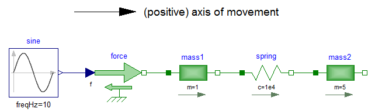
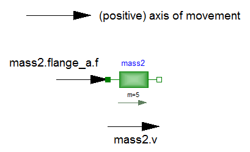

SignConventionsSign Conventions |
|
Information
This information is part of the Modelica Standard Library maintained by the Modelica Association.
The variables of a component of this library can be accessed in the usual way. However, since most of these variables are basically elements of vectors, i.e., have a direction, the question arises how the signs of variables shall be interpreted. The basic idea is explained at hand of the following figure:

First, one has to define
a positive direction of this line, called axis of movement.
In the top part of the figure this is characterized by an arrow
defined as axis of movement. The simple rule is now:
If a variable of a component is positive and can be interpreted as
the element of a vector (e.g., force or velocity vector), the
corresponding vector is directed into the positive direction
of the axis of movement. In the following figure, the right-most
mass of the figure above is displayed with the positive
vector direction displayed according to this rule:

The cut-force m2.flange_a.f
of the right mass is directed into the
direction of movement if the values are positive. Similarly,
the velocity m2.v of the right mass
is also directed into the
direction of movement if the values are positive